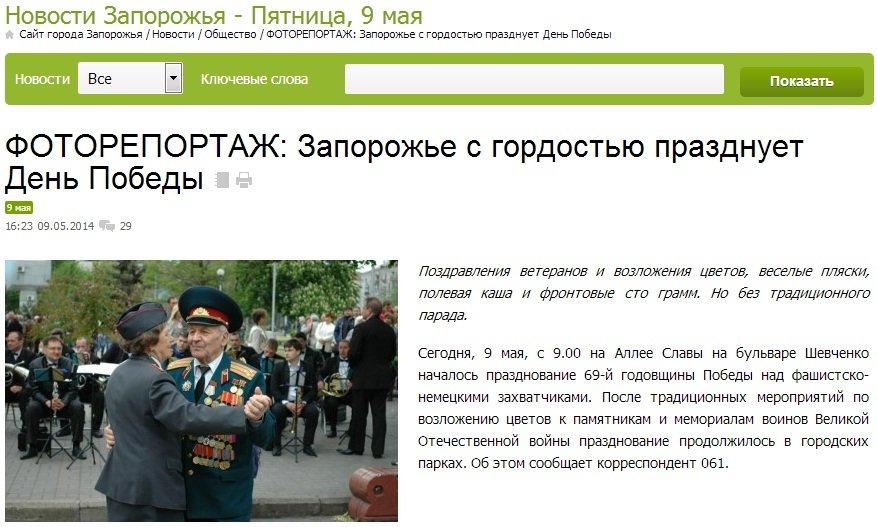
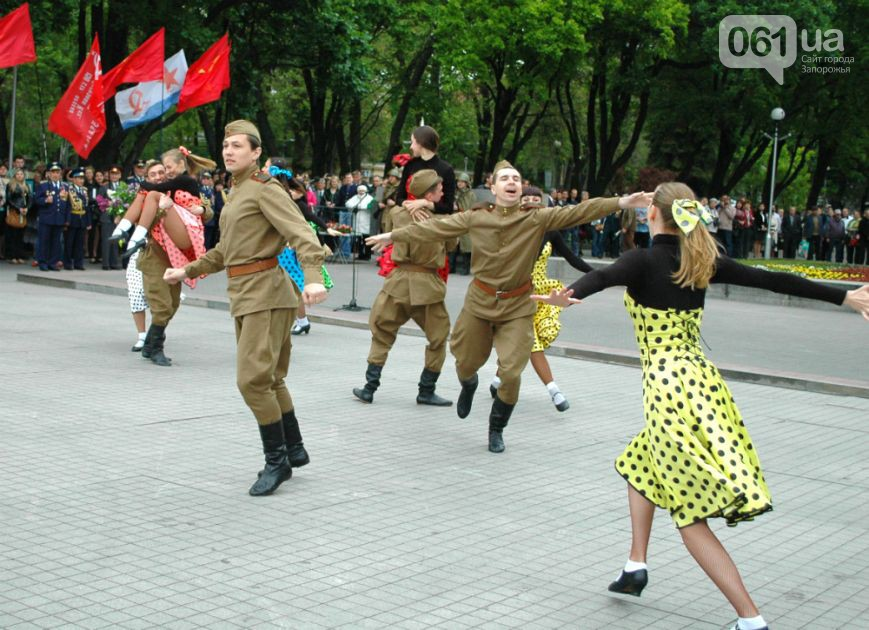
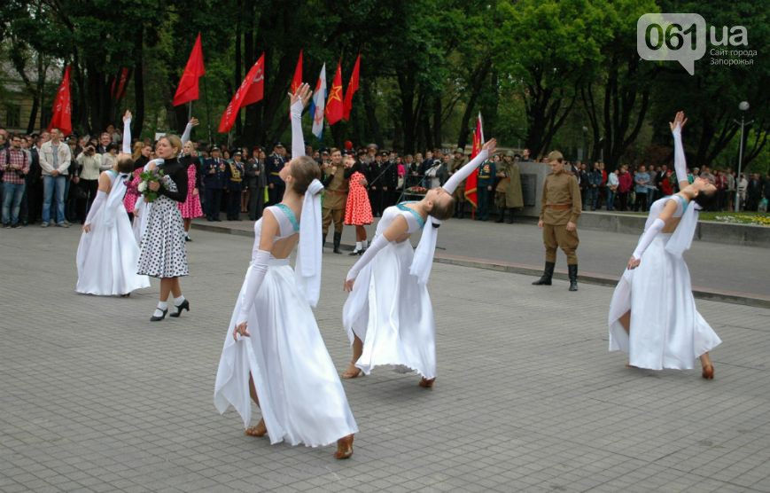
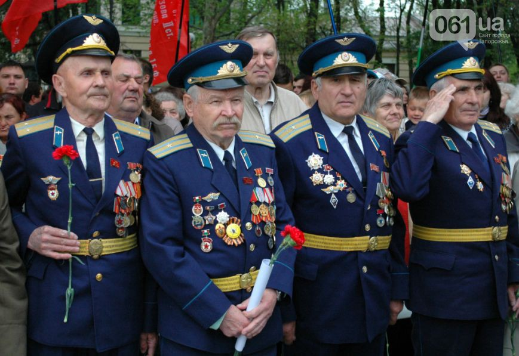
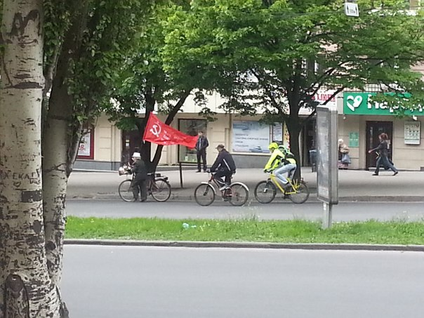

В Запорожье не запрещали празднование Дня Победы
В социальных сетях активно распространяется видео о том, что в Запорожье власти запретили праздновать День Победы — 9 мая.
http://www.youtube.com/watch?feature=player_embedded=t0MabVlry8I
«Сегодня в Запорожье несмотря на запрет нацистской Хунты и её пособников из числа местных властей один ветеран устроил личный Парад Победы.Люди на остановке ему аплодируют!Во избежание провокаций дедушку сопровождает почётный эскорт велосипедистов», — написал автор видео.
Видео настоящее, но объяснение к нему — неправдивое.На самом деле ветеран возвращается как раз-то с празднования Дня Победы в Запорожье.
Вот больше фото с этого праздника:
С него и возвращался ветеран.А следом за ним ехали велосипедисты из запорожской самообороны во избежание каких-либо провокаций.
По материалам: veliss.livejournal.com.
Posted On: 2014-05-12T21:00:00





Content Date: 2014-05-12
Download Date: 2021-07-16
Document ID: L0C04FBVS